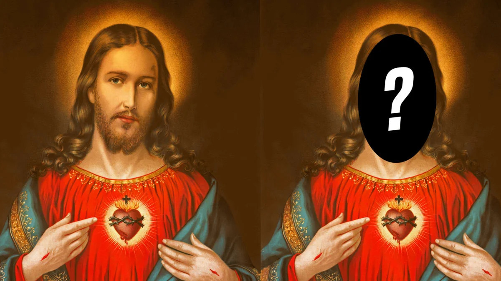
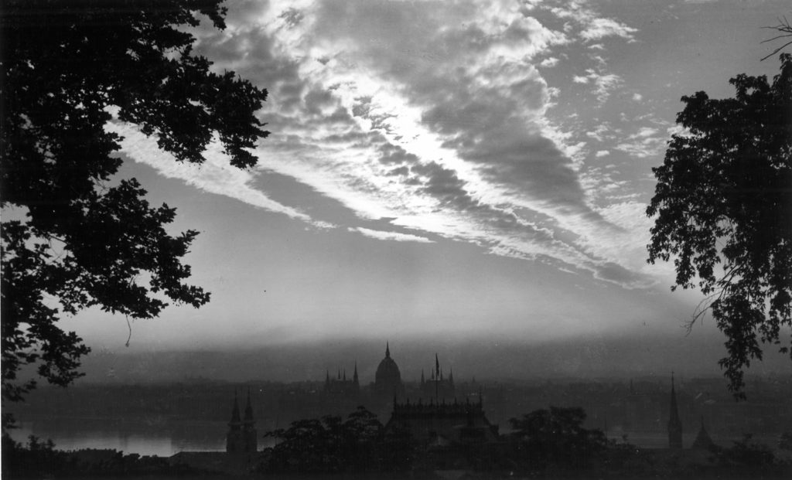

Kínzóeszközök-Konspirációk
Ki volt Jézus ikertestvére?

Jézus ikertestvére a Vatikán és az egyház legnagyobb
elhallgatott titka: romba dönthetné a Biblia hazugságait
A Vatikán legnagyobb szándékosan a történelemből kitörölt titka? Nem is Jézus halt meg a kereszten?!
Ez lehet az egyik eddigi legmegdöbbentőbb dolog, amit valóban titkolhatnak Krisztus személyével kapcsolatban.
Régóta kering egy szóbeszéd, egy legenda, mely azt állítja, hogy nem is Jézus halt meg a kereszten, őt magát
ugyanis nem feszítették keresztre.
Hirdetés
Valójában saját maga helyett mást “küldött fel” a keresztre, így tudta létrehozni és terjeszteni a valaha volt
legnagyobb vallást, a kereszténységet és a jézusi tanítást.
A Vatikán végig tudhatott erről a konteó állításai szerint, azonban módszeresen elkezdték kitörölni ennek a
ténynek a nyomait a múltból, mind történelmi, mint pedig evangélikus szinten.
Az egészben odáig mentek el, hogy azon a bizonyos zsinaton minden iratot és könyvet száműztek, melyek említést
mertek tenni Jézus eltitkolt ikertestvérétől, vagy amelyek eltértek az eredeti irányvonaltól, és egy kicsit is
árnyalták a Jézusról kialakítani kívánt képet.
Nyilvánvalóan nem teljesen volt titok sohasem, hogy Jézus nem volt teljesen egyedül.
Több bibliavers is említi Jézus fivéreit.
A Máté 12:46, Lukács 8:19, és Márk 3:31 arról szól, hogy Jézus anyja és testvérei odamentek hozzá. A Biblia
szerint Jézusnak négy fivére volt: Jakab, József, Simon és Júdás (Máté 13:55). Azt is elárulja, hogy voltak
lánytestvérei is, de nem nevezi meg őket, és nem mondja meg, hogy hányan (Máté 13:56).
A János 7:1-10-ben Jézus fivérei elmennek az ünnepre, de ő marad. A Cselekedetek 1:14-ben fivérei és anyja a
tanítványokkal imádkoznak. A Galata 1:19 megemlíti, hogy Jakab Jézus testvére volt.
Ezeknek a szövegrészeknek a legtermészetesebb magyarázata az, hogy Jézusnak voltak féltestvérei.
Arról azonban a Biblia és az egyház is hallgatott, hogy ikertestvére is lehetett, és ő halt meg helyette a
kereszten.
Hirdetés
Jézusnak egy egypetéjű ikertestvére is volt, aki ugyanúgy nézett ki, mint ő maga. Ezzel pedig lehetőségük
adódott létrehozni a világtörténelem legnagyobb szemfényvesztését.
Sokak szerint nem véletlen az, hogy Jézus egy ritka csillagászati jelenség keletkezésekor született meg
ikertestvérével együtt.
A keleti csillag a Szíriusz, ami a legfényesebb éjszakai csillag, és december 24-én egy állásban van az Orion-öv
másik három csillagával. Ezeket pedig az ősi időkben úgy hívták: a három királyok.
Ez a három, plusz a Szíriusz egy helyre mutatnak: a december 25-i napfelkelte helyére. Ezért követte a “három
király” a keleti csillagot, hogy megtalálja a napfelkeltét. A Nap születésének helyét. Szűz Mária a Szűz
csillagképe.
Véletlen lenne?
A teória hívei szerint aligha…
Ez megmagyarázná azt is, hogy Jézus miért tűnt egyszer úgy, mint egy halandó, másszor pedig mint egy igazi
csodatévő.
Mert nem ugyanaz volt a két személy…
Sok vallástörténész szerint ez az éles kontraszt nem másra utal, mint arra, hogy Jézus valójában egy
ikertestvérrel rendelkezett, és időnként róla írnak egyes iratok, nem pedig az eredeti Krisztusról.
Jézusnak pedig a keresztre feszítéskor az ikertestvére halt meg a kereszten, így tudták megteremteni a
kereszténységet, mint világvallást.
Mi a chemtrail, mi igaz abból, amit hallani lehet róla?
Akadnak emberek, akik abban hisznek, hogy a repülőgépek után rövidebb-hosszabb ideig megmaradó, vaskos csíkok az
égen nem kondenzcsíkok, hanem chemtrailnek nevezett vegyi csíkok.
Ezeket pedig egy sok százezer főt magába foglaló, globális összeesküvés keretében engedik a légkörbe, amelynek
célja a lakosság mérgekkel való permetezése elmekontroll/betegítés/népirtás céljából.
Nos, tényleg vannak, akik ebben hisznek, és olyan apróságok, mint a fizika, a kémia vagy éppen az emberek
sajátosságai hidegen hagyják őket.
Chemtrail történelem: mikor és miért figyelt fel rá az emberiség?
A chemtrail viszonylag új keletű összeesküvés-elmélet, az amerikai légierő egyik dokumentuma szerint 1996-ban
kapott szárnyra, amely szerint a katonaság szór gyanús anyagokat, mérgeket a levegőbe a polgári lakosság
ellenében.
Tehát itt még szó sincs arról, hogy globális összeesküvés zajlana az emberiség ellen!
William Thomas volt az első olyan önjelölt „oknyomozó újságíró”, aki 1999-ben elkezdte leírni az amerikai
kormány állítólagos terveit, amely szerint a sugárhajtású repülőgépek a kondenzcsíkjaik által mérgeket juttatnak
a légkörbe.
A chemtrail meghatározása viszont Jeff Rense nevéhez fűződik, aki egész egyszerűen úgy vélte, hogy a kémiai
csíkokat arról lehet felismerni, hogy sokáig megmaradnak, szélesen elterülnek, és jellemzően X formában
egyszeresen vagy többszörösen egymást keresztezik, aminek az eredménye vékony fátyolfelhőzet lesz.
Tényleg megőrült az amerikai kormányzat, hogy dollármilliókat éget el (majdnem) szó szerint a levegőben, csak
azért, hogy „lemérgezze” a lakosságot? A chemtrail hívei szerint a válasz: igen.
Apropó, felhők. Elég körülményes 1945 előtti fényképek között megfelelőt találni, de itt, egy 1943-as,
Budapestről készült képen jól látszik, hogy a vékony csíkként kezdődő, majd szétterülő fátyolfelhőzet bizony
természetes.

Milyen teóriák keringenek a chemtrail jelenséggel kapcsolatban?
Mára odáig burjánzott a chemtrail összeesküvés elmélete, hogy már nem is az amerikai légierő, hanem globálisan
minden nagyobb légitársaság mérgező vegyi anyagokat permetez az egész világon (elsősorban alumíniumot, báriumot
és stronciumot).
Mivel ez eléggé lehetetlen fizikailag (lásd lentebb), ezért az elmélet egyik mutációja szerint utasok nélküli
repülőgépekről szórják az égi „áldást”. Hogy ezt honnan veszik, annak az okát is megismerheted a következőkben.
Nanobotok, chemtrail és 5G
Szintén terjed olyan változata, amelyben nem (csak) vegyi anyagokat, de nanobotokat (nanométeres „nagyságú”
robotokat) is szórnak. A koronavírus járvány kezdete óta újabb mutáció figyelhető meg: e szerint a chemtrail
által permetezett anyagot belélegezve és az 5G adótornyok által besugározva lesznek betegek az emberek
valójában.
Igaz, ez a változat hamar elhalt, mert az 5G hálózat a világ legnagyobb részén egyáltalán nem működik most sem,
így nehéz volt fenntartani az állítást még konteós mércével mérve is.
A cél: népirtás és/vagy elmekontroll
Az összeesküvés hívei szerint ennek az egésznek a legfőbb célja megbetegíteni és/vagy kiirtani és/vagy csökkent
gondolkodású, irányítható rabszolgákká változtatni az emberiséget.
Persze arra, hogy miként védené meg a Gonosz HáttérHatalom a saját embereit az állítólag mindenfelé hulló
mérgező anyagoktól, valahogy egyik chemtrail-hívő se tud magyarázatot adni.
Szintén nem kapunk magyarázatot arra, hogy miért érné meg dollármilliárdokból egy ilyen összeesküvést
végrehajtani, amikor bőven elég volna az amúgy is szmogos városokban mérgezni a levegőt…
Ha csak felszínesen nézzük az összeesküvés elméletet, azt mondhatjuk, a szokásos „nem értjük a világot, túl
bonyolult nekünk, túl gyorsan változik, félelmetes az egész, valakit muszáj okolni a bajok miatt” esetére egy
példa.
A világ tele van ilyen és hasonló „elméletekkel”, könnyű legyinteni, hiszen egyértelmű, hogy nincs „kémiai csík”
csak kondenzcsík. Ennek a fizikája egyszerű, bár tényleg több ismeretet igényel, mint amit az általános iskola
alsó osztályában oktatnak: már 1953-ban megjelent az első tudományos írás a jelenségről.